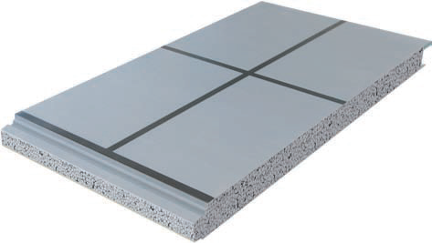
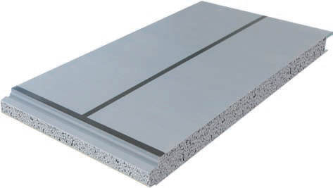
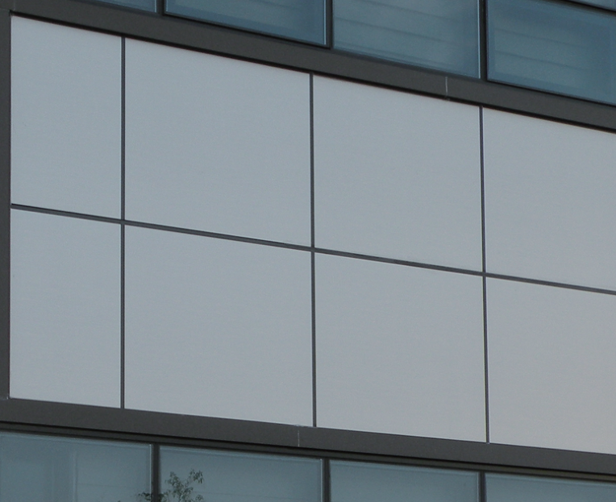
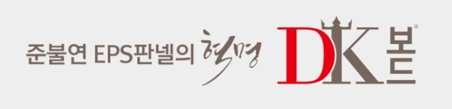

대광 EPS 준불연 DK보드가 단열재(심재)인 '라인메탈 판넬'은
·대형 평면의 우수한 평활도를 가지고
·블랙라인(메지)이 건축물의 모던함을 살려 깔끔하고 심플한 외관을 만들어냅니다.


라인메탈로 시공한 건물은 조립식판넬이 아닌 일반 건축마감재로 시공한 것 처럼 보여, 외관에 중점을 주시는 건축주분들에게는 매우 실용적이고 경제적인 제품입니다.

특히 !
국토교통부 건축안전모니터링에서 '적합' 판정을 받은 '화재에 강한 - EPS 준불연 단열재 DK보드'가 심재로 사용되어 건축물 인허가도 걱정없으니 더욱 매력적인 안전한 제품입니다. ?

내식성이 우수한 갈바륨 강판과
준불연 DK보드 심재로 구성된
대광 준불연 DK보드 판넬 !
대광 준불연 DK보드 판넬은
화재에 강하고
오랜 시간이 지나도
부식 걱정없습니다